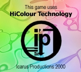

![[Icarus Productions] - Click for main page](img/iplogo.gif)
|

While gaming platforms such as the Nintendo 64 or the PC boast a wide variety of on-screen colors, the GameBoy Color™ is only able to show a total of 56 colors at once. Especially in a time where good presented games (this includes intro sequences, etc.) are a must, this lack of colors is a major drawback.
After more than half a year of work, we at Icarus Productions are thus proud to present you a valuable library for enhancing your GameBoy Color™ games. As shown on the next pages, our HiColour library provides an easy and flexible way to include stunning still pictures and even short FMV sequences in your games. Using a special technique taking advantage of interrupts, we are able to increase the colors shown at once on the GameBoy Color's screen from 56 to as much as 2048. This technology can be used effectively in still pictures, as the large data to be processed by the CPU as well as some other hinderances don't allow for a whole game in HiColour. However, several effects, such as vertical scrolling or wobbling, as well as FMV sequences can be easily achieved with a few calls to our library.
The same goes for movies. All the user has to do is provide a standard Windows AVI file, the rest is done by the converter. There's even the possibility of also converting the digital sound of your movie and have it played back on the GameBoy Color. Due to lossy compression, there's a slight impact on the quality of the movie, however, this is made up with nearly three times as much frames as if it was not compressed. During displayal of a picture or FMV, the library uses a considerable amount of CPU power. However, it is still possible to have an interrupt perform minor tasks in the back-ground, such as playback of music or a menu on the title screen. The program just has to keep the picture "alive" by calling a function at every start of a VBlank. A few transition effects are included as well with the library in order to achieve a smooth blend from HiColour to normal pictures. These effects temporarily occupy RAM memory, which is of course freed up afterwards. Several versions are available, reaching from simple displayal of images to top-notch FMV sequence playing. The ROM requirement of the code is minimal, and the images and movies are compressed as well, latter ones down to as much as 35% of their original size. All versions of the library come with extensive documentation, the conversion program, as well as sample code demonstrating how to use the various functions of the respective version. For further information, don't hesitate to contact Andreas Ess! We're looking forward hearing from you! Related documents
|